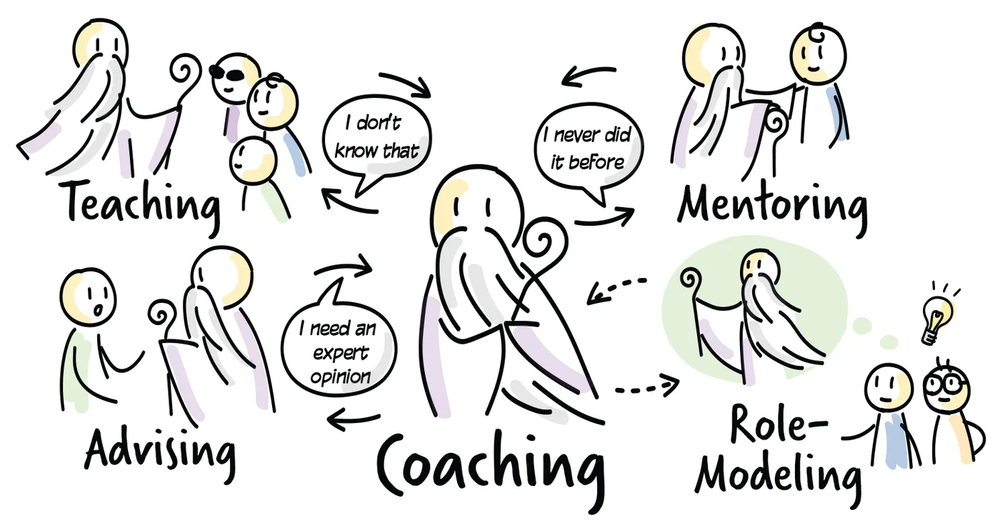

Five stances

Coaching someone at work usually involves more than coaching in the narrow sense. A coach moves between five stances, and it helps to know at any moment which one you are in.
Coaching is the most neutral stance, where you are not trying to push your ideas onto the other person or team. It is your default stance, your "home base", where you start and end every coaching interaction. From here you can step into any of the four stances below. Stepping back into coaching as soon as the situation allows helps you stay unbiased. Activities in the coaching stance include listening, observing, challenging the status quo, questioning assumptions and facilitating.
Teaching helps when you notice a lack of knowledge, often during a coaching conversation. Besides explaining concepts and answering questions, you need to check that the knowledge has actually been acquired. Find your way back to the coaching stance as soon as possible with questions like "How do you think this new knowledge will affect what you do next?" or "What would be the best thing to do now?"
Mentoring is passing on experience to someone who already has some knowledge but lacks experience. It is often confused with coaching, possibly because a good mentor also needs to be a good listener and coach. A coach might mentor a less experienced coach, a new team lead or a facilitator. Mentoring includes storytelling, demonstrating, questioning, working side by side and pairing. Again, return to your home base afterwards, for example with "That was the story I wanted to tell. What thoughts does it give you?" or "Now that we have done this together, let me see you do it on your own."
Advising reflects the fact that coaches have experience that people want to access. This stance conflicts with coaching, because it shifts some responsibility to you as the advisor, and your experience may not fit the other person's context. Coaches often answer "It depends" and then explain the relevant theory (teaching), help the person find their own answer (coaching) or give enriching examples (mentoring). The best thing to do in this stance is to offer two or three options and let the other person decide. To return to coaching, you might ask "Could it be a possibility for you to …?" or say "Another approach you could explore is …".
Role-modelling helps people understand what a behaviour looks like in practice. You may use this stance less often than the others, but it increases your credibility as a coach: you cannot say one thing and do another. Living the values you ask others to adopt, such as integrity, transparency, honesty and a commitment to help people grow, is one of the best ways to be in this stance. You might also facilitate a few meetings yourself and gradually hand this over to the people you coach.
Knowing which stance you are in
Teaching or advising can feel easier or faster, but they rarely lead to the same level of learning. So be aware of which stance you are taking at any given moment. You will change stances regularly as the situation requires, and each stance needs a different approach.
Remember that as a coach you are there to help people and teams improve how they work, not to take over their work. When you position yourself inside the system, it becomes difficult to stay objective. Unless you happen to be a recognised expert in their field, the people you coach probably understand their work and their customers better than you do.
Practice
Self-reflection. Think of situations where you have used coaching skills. Which stance were you in, and when did you switch? Identify one area you would like to improve. If you can, discuss your reflections with a colleague who is also developing their coaching skills.
Situations away from coaching. Think of at least three situations in which you typically act from a stance other than coaching. For each one, describe the situation, how you could act from the coaching stance instead, how you could switch back to coaching, and which questions you would ask.
Coaching dojo. Practise stance changes in a coaching dojo. The observers watch for transitions between stances and what triggered them, and whether the coach found a way back to coaching.